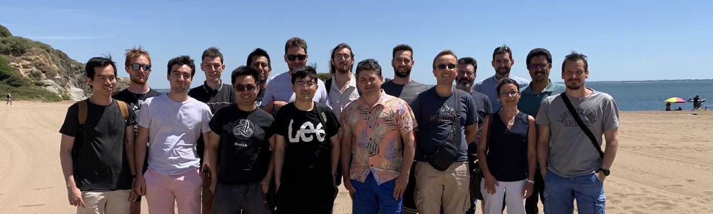

Born in 1990, I went to Northwestern Polytechnical University in China in 2009 studying at the hornor college. Then, I continued my master program in Navigation, Guidance & Control in Northwestern Polytechnical University in 2013.
I went to École Centrale de Nantes in France and studied Advanced Robotics master program in 2015. With interest in robotics research, I has been a Ph.D student at Laboratoire des Sciences du Numérique de Nantes (LS2N-Nantes), under the supervision of Isabelle Fantoni, Abdelhamid Cheiette and Vincent Bégoc in ARMEN team from 2017 till now.
